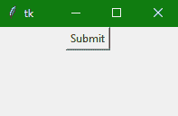
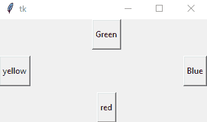
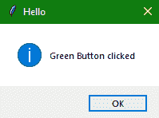

Tkinter 按钮小部件
在本教程中，我们将介绍 Python 中 Tkinter 模块的按钮小部件。
Tkinter 中的按钮小部件主要用于在任意 GUI 应用中添加按钮。在 Python 中，在使用 Tkinter 按钮小部件的同时，我们可以很容易地修改按钮的样式，比如给它添加一个背景色，调整按钮的高度和宽度，或者按钮的位置等。非常容易。
您可以在按钮小部件的帮助下向应用添加各种类型的按钮(根据您的应用用户界面)。
如果您愿意，您也可以将任何方法或函数与按钮相关联，然后每当您按下按钮时，该方法将被调用。
按钮小部件有多个选项，您可以根据您的要求进行重置或设置。
Tkinter Button Widget
按钮小部件的语法如下所示，
W = Button(master, options)
在上面的语法中，master参数表示父窗口。您可以使用许多选项来更改按钮的外观，这些选项被写成逗号分隔的。
Tkinter Button Widget 选项:
以下是 tkinter 按钮小部件使用的各种选项:
| 选项名称 | 描述 |
|---|---|
activebackground |
该选项表示鼠标悬停在按钮上时按钮的背景。 |
bd |
该选项用于以像素为单位表示边框的宽度。 |
bg |
该选项用于表示按钮的背景色。 |
command |
命令选项用于设置功能调用，该功能调用是在调用时安排的。 |
activeforeground |
该选项主要代表鼠标悬停在按钮时按钮的字体颜色。 |
fg |
该选项代表按钮的前景色。 |
font |
该选项指示按钮的字体。 |
height |
该选项指示按钮的高度。该高度在文本行的情况下表示文本行数，在图像的情况下表示像素数。 |
image |
该选项指示按钮上显示的图像。 |
higlightcolor |
此选项指示按钮上有焦点时的高亮颜色 |
justify |
该选项用于指示多条文本行的表示方式。对于左对齐，它设置为左对齐，对于右对齐，它设置为右对齐，对于中心对齐，它设置为中心对齐。 |
padx |
该选项表示按钮在水平方向的附加填充。 |
pady |
该选项表示按钮在垂直方向的附加填充。 |
underline |
该选项用于给按钮的文本加下划线。 |
width |
此选项指定按钮的宽度。对于文本按钮，它以若干字母的形式存在；对于图像按钮，它表示像素。 |
Wraplength |
在这种情况下，如果该选项的值是设置为正数，文本行将被包裹，以便适合该长度。 |
state |
该选项的值设置为禁用，使按钮无响应。激活主要代表按钮的激活状态。 |
我们将在下面的例子中使用不同的选项。
Tkinter 按钮小部件示例
现在让我们借助下面给出的代码片段创建一个简单的提交按钮:
from tkinter import *
win = Tk() ## win is a top or parent window
win.geometry("200x100")
b = Button(win, text = "Submit")
b.pack() #using pack() geometry
win.mainloop()

在上面的代码示例中，我们创建了一个给定宽度和高度的简单窗口。然后我们给它添加了一个按钮小部件，提供了作为该按钮主窗口创建的窗口，并为该按钮添加了一个文本。
Tkinter 按钮小部件-添加样式和事件处理程序
下面是另一个代码片段，我们将通过添加更多样式来改变按钮的外观。让我们看看我们是如何做到的:
import tkinter
from tkinter import *
from tkinter import messagebox
top = Tk()
top.geometry("300x150")
def click():
messagebox.showinfo("Hello", "Green Button clicked")
a = Button(top, text="yellow", activeforeground="yellow", activebackground="orange", pady=10)
b = Button(top, text="Blue", activeforeground="blue", activebackground="orange", pady=10)
# adding click function to the below button
c = Button(top, text="Green", command=click, activeforeground = "green", activebackground="orange", pady=10)
d = Button(top, text="red", activeforeground="yellow", activebackground="orange", pady=10)
a.pack(side = LEFT)
b.pack(side = RIGHT)
c.pack(side = TOP)
d.pack(side = BOTTOM)
top.mainloop()

在上面的代码中，我们使用不同的选项添加了一些样式，并添加了一个事件处理程序来处理第三个按钮的 click 事件。所以每当你点击带有绿色文字的按钮时，你会看到一个带有信息的 Tkinter 消息框。

总结:
在本教程中，我们学习了如何制作一个具有各种选项的 Tkinter Button 小部件，如改变按钮的样式、向按钮添加文本或定位按钮。我们还看到了一个代码示例，它向任何按钮添加一个事件处理函数，以便在单击按钮时执行一些操作。